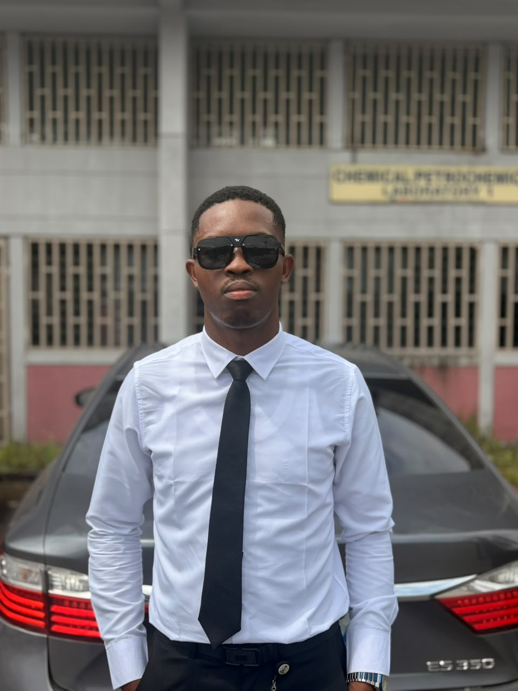
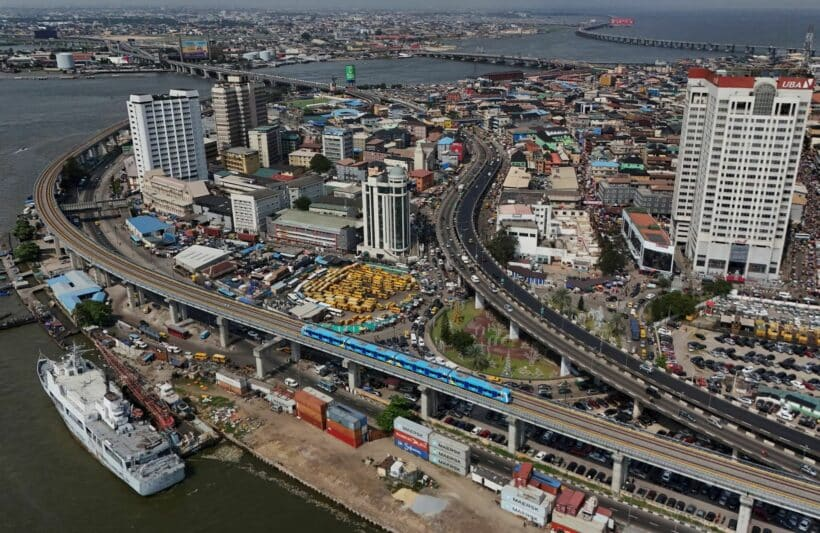

Providence Obadiah Ereforokuma
About Me
Hello! My name is Providence Obadiah Ereforokuma. I am a student at BYU-Pathway Worldwide, where I am developing my knowledge and skills in technology and web development.
I enjoy learning new things, solving problems, and discovering creative ways to use technology. My goal is to become a skilled professional who can use technology to make a positive difference in society.
Outside academics, I enjoy creativity, entrepreneurship, personal development, and serving others. I believe consistency, hard work, and lifelong learning are important keys to success.

My Home Country: Nigeria

Nigeria is a country in West Africa known for its rich cultural diversity, vibrant traditions, natural resources, and hardworking people. Its capital city is Abuja, while Lagos is one of its largest commercial centres.
Nigeria is home to many ethnic groups, including the Igbo, Yoruba, and Hausa, as well as hundreds of other communities. English is the official language.
One thing I appreciate about Nigeria is the resilience, creativity, and determination of its people. Despite challenges, Nigerians continue to contribute to business, education, technology, arts, and innovation around the world.